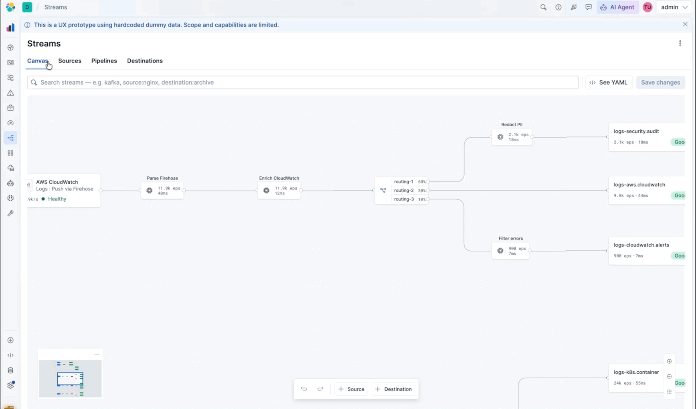

Tech Preview
Nov 2026
GA
Feb 2027
Streams · Demo
Visual pipeline
builder
Route, enrich, and filter data in real time. No YAML required.
Route
Enrich
Filter
Open the live demo ↗
streams-ux-prototype.vercel.app
streams-ux-prototype.vercel.app
